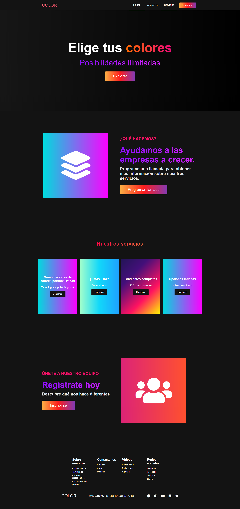
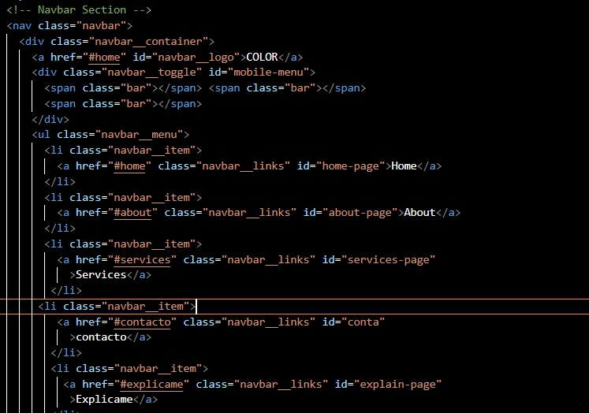
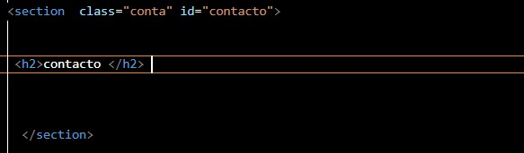
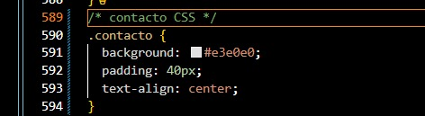
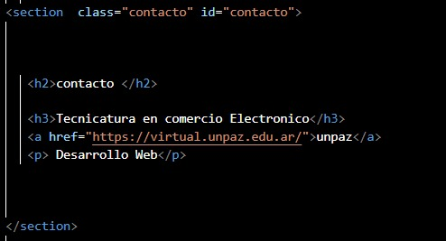
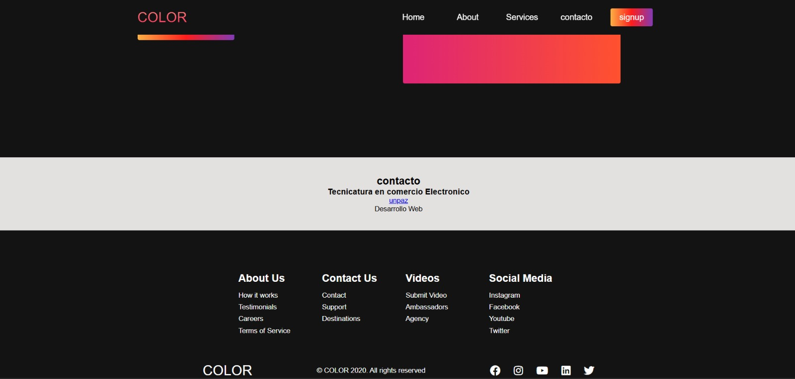

Secuencia de edicion para armar la seccion de contacto
Cada paso muestra el estado del codigo en ese momento: navbar, seccion, CSS, etiquetas y resultado final.
Vista general de la pagina ya terminada: hero, about, services, registro, la seccion de contacto al final y el footer.

Se aniade el item de contacto al menu principal con el enlace de ancla #contacto (id="conta"), listo para saltar a la seccion.

Se crea la seccion vacia <section class="conta" id="contacto"> con un unico <h2>contacto</h2>.

Se aplica estilo con la clase .contacto: fondo claro, padding de 40px y texto centrado.

Se aniaden los contenidos: <h3>Tecnicatura en comercio Electronico</h3>, el enlace a unpaz y el parrafo Desarrollo Web.

Resultado renderizado: la seccion contacto con fondo gris claro, centrada, justo antes del footer.
